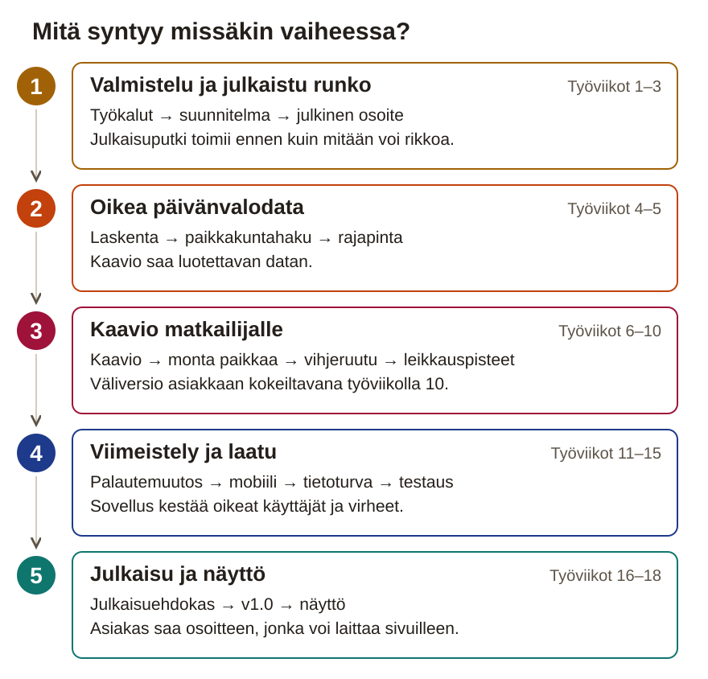

Paperinen työpaketti
Päivänvalon visualisointi Suomen paikkakunnille: PHP-rajapinta, React-käyttöliittymä ja julkaisu tuotantoon
18 työviikkoa · päivätön aikataulu · luovutus 18. työviikon perjantai
Tämä paketti on aikataulu ja tarkistuslista tilanteisiin, joissa sivusto ei ole auki. Projektipäiväkirja kirjoitetaan sivustolla ja viedään repositoryn project-docs-kansioon. Rasti tässä vihossa ei ole palautus: työ on aina Git-repositoryssa.
Aikataulu on päivätön: työviikko 1 on se viikko, jolla opiskelija aloittaa, ja projekti kestää 18 työviikkoa.
Julkiseen repositoryyn ei laiteta henkilötietoja, koulun tunnisteita eikä muiden nimiä: henkilöistä kirjataan vain rooli, ja nimet lähetetään tarvittaessa ohjaajalle Teamsissa. Tekijänimestä sovitaan ohjaajan kanssa.
Valokaari piirtää Revontuli Travelin sivuille kaavion siitä, kuinka pitkä päivä on vuoden jokaisena päivänä millä tahansa Suomen paikkakunnalla. Käyttäjä vertaa useita paikkoja samassa kaaviossa, ja kaamos ja yötön yö erottuvat siitä heti.

1. Valmistelu ja julkaistu runko · työviikot 1–3. Otat työkalut käyttöön, teet hyväksytyn suunnitelman ja viet tyhjän sovelluksen julkiseen osoitteeseen. Julkaisu tehdään ensin, koska se on projektin todennäköisin kaatumiskohta.
2. Oikea päivänvalodata · työviikot 4–5. Kirjoitat päivänvalolaskennan testeineen ja paikkakuntahaun. Rajapinta palauttaa minkä tahansa Suomen paikkakunnan vuoden oikein, myös kaamoksen ja yöttömän yön.
3. Kaavio matkailijalle · työviikot 6–10. Rakennat kaavion, monen paikan vertailun, vihjeruudun ja leikkauspisteet. Asiakkaan edustaja kokeilee väliversiota ja kertoo, mitä muutetaan.
4. Viimeistely ja laatu · työviikot 11–15. Toteutat vuosivalinnan ja katselmoinnin tärkeimmän muutoksen, teet sovelluksesta mobiilissa ja näppäimistöllä toimivan ja arvioit tietoturvan. Testaus ja dokumentaatio kootaan valmiiksi.
5. Julkaisu ja näyttö · työviikot 16–18. Ulkopuolinen testaaja kokeilee julkaisuehdokasta pelkän ohjeen avulla. Korjaat esteet, julkaiset v1.0:n ja esittelet työsi näytössä.
Viikon työvaihe on tämän sivuston työohje. Kun toteutat muutoksen sovellukseen, kirjaa se GitHub-issueksi hyväksymiskriteereineen ja tee siitä commit. Testin tulos kirjataan issueen heti, viikon yhteenveto projektipäiväkirjaan viikon lopussa.
| Vko | Ajoitus | Viikon aihe | Vaihe |
|---|---|---|---|
| 1 | Työviikko 1 / 18 | Aloitus | 1 |
| 2 | Työviikko 2 / 18 | Suunnitelma ja priorisointi | 1 |
| 3 | Työviikko 3 / 18 | Julkaistu runko | 1 |
| 4 | Työviikko 4 / 18 | Päivänvalolaskenta | 2 |
| 5 | Työviikko 5 / 18 | Paikkakuntahaku ja rajapinta | 2 |
| 6 | Työviikko 6 / 18 | Ensimmäinen kaavio | 3 |
| 7 | Työviikko 7 / 18 | Monta paikkaa: itse rakennettu näkymä | 3 |
| 8 | Työviikko 8 / 18 | Tooltip ja ääripäät | 3 |
| 9 | Työviikko 9 / 18 | Leikkauspisteet | 3 |
| 10 | Työviikko 10 / 18 | Asiakaskatselmointi | 3 |
| 11 | Työviikko 11 / 18 | Vuosivalinta ja palautemuutos kahdessa haarassa | 4 |
| 12 | Työviikko 12 / 18 | Mobiili ja saavutettavuus | 4 |
| 13 | Työviikko 13 / 18 | Tietoturva-arvio ja virheenkäsittely | 4 |
| 14 | Työviikko 14 / 18 | Testaus | 4 |
| 15 | Työviikko 15 / 18 | Laatu ja dokumentaatio | 4 |
| 16 | Työviikko 16 / 18 | Julkaisuehdokas ja julkaisutestaus | 5 |
| 17 | Työviikko 17 / 18 | Julkaisu v1.0 ja luovutus | 5 |
| 18 | Työviikko 18 / 18 | Näyttö | 5 |
Palautus viimeistään 18. työviikon perjantai. Sivusto: tehtävien tarkat ohjeet, toteutusavut ja projektipäiväkirja.
Yhteys kokonaisprojektiin: Lähtöaineisto on asiakkaan toimeksianto: siitä poimit pakolliset asiat ja epäselvät kohdat kysymyslistaksi. Samalla saat käyntiin sovelluksen kaksi ajoympäristöä, PHP:n ja Noden, ja perustat julkisen repositoryn, jonka Git-historia on työnäytteiden paikka koko projektin ajan. Ohjaajan vastaukset kysymyksiin ovat työviikon 2 suunnitelman pohja.
Viikon tavoite: Toinen henkilö kloonaa julkisen repositoryn ja saa PHP-palvelimen ja React-rungon käyntiin pelkän README:n avulla.
Työvaihe 1 / 4 · Lue toimeksianto ja kirjoita kysymyslista ohjaajalle
valokaari/ ja sen alle kansiot client/, server/ ja project-docs/. Kaikki projektin tiedostot tulevat näihin kansioihin.project-docs/kysymykset.md. Esimerkki: mitä tapahtuu, jos kaksi kuntaa on samannimisiä?Valmis kun: project-docs/kysymykset.md sisältää vähintään kuusi kysymystä, ja lisenssi, julkisuus ja tekijänimi ovat mukana.
Tallenna työnäyte: project-docs/kysymykset.md. Se tulee repositoryyn ensimmäisessä commitissa. Kysymykset myös työviikon 1 päiväkirjaan.
Työvaihe 2 / 4 · Asenna työkalut ja kirjaa versiot README:hen
php -v, node -v, npm -v ja git --version. Jokaisen pitää tulostaa versionumero.README.md:hen taulukko: työkalu, versio ja tarkistuskomento. Pelkkä ”asensin” ei riitä työnäytteeksi.git init projektikansiossa ja tee ensimmäinen commit, jonka viesti kertoo projektin perustamisesta. Mukaan tulevat README ja kysymyslista.Valmis kun: README:n taulukossa on neljän työkalun versio ja tarkistuskomento, ja git log näyttää ensimmäisen commitin.
Tallenna työnäyte: README.md ensimmäisessä commitissa. Asennetut versiot myös työviikon 1 päiväkirjaan.
Työvaihe 3 / 4 · Käynnistä React-runko ja PHP-palvelin
client/-kansioon React + TypeScript -projekti Vitellä. Älä asenna Tailwindia vielä: se otetaan käyttöön työviikolla 7, kun sitä tarvitaan.npm run dev ja avaa osoite selaimessa. Ota kuvakaappaus näkyvästä rungosta.server/public/index.php, joka palauttaa {"status":"ok"} JSON-muodossa oikealla sisältötyypillä application/json.php -S localhost:8000 -t server/public, avaa http://localhost:8000 ja ota kuvakaappaus vastauksesta..gitignore, joka jättää pois kansiot node_modules/, client/dist/ ja vendor/ sekä tiedoston .env. Tee commit.Valmis kun: npm run dev näyttää React-rungon, localhost:8000 palauttaa {"status":"ok"}, ja README kertoo molempien käynnistyksen.
Tallenna työnäyte: Kuvakaappaukset project-docs/-kansioon ja koodi commitilla.
Työvaihe 4 / 4 · Perusta julkinen repository ja testaa README toisella henkilöllä
git push.Valmis kun: Toinen henkilö sai rungon käyntiin pelkällä README:llä, ja ohjaaja on repositoryn yhteistyökumppani ja on kuitannut julkisuustarkistuksen.
Tallenna työnäyte: Repositoryn osoite, toisen henkilön pysähtymiskohta ja avoimiksi jääneet julkisuusasiat työviikon 1 päiväkirjaan.
Viikon lopputarkistus: Nimetty toinen henkilö (luokkakaveri tai ohjaaja) saa rungon käyntiin pelkän README:n avulla; ohjaaja on kuitannut julkisen repon tarkistuslistan ja hänet on lisätty repositoryn yhteistyökumppaniksi; kysymyslistassa on vähintään kuusi kysymystä.
Työnäyte Git-repositoryyn ennen rastia: README:n versiotaulukko, kuvakaappaukset kehityspalvelimesta ja PHP-vastauksesta, kuitattu julkisuustarkistuslista, kysymyslista ja commit-historian alku (p1, k1; s12 alkaa).
Yhteys kokonaisprojektiin: Työviikon 1 kysymyslista saa ohjaajalta vastaukset, ja toimeksianto muuttuu priorisoiduiksi käyttäjätarinoiksi ja perustelluiksi päätöksiksi. Oma koeajo ratkaisee laskentatavan, ja issue-taulu jakaa työn puolen päivän paloiksi. Hyväksytty suunnitelma on se, jota vasten jokainen seuraava viikko rakennetaan ja arvioidaan.
Viikon tavoite: Ohjaaja on hyväksynyt suunnitelman, jossa jokaisella pakollisen ytimen tarinalla on issue, hyväksymiskriteerit ja työmääräarvio.
Työvaihe 1 / 4 · Kirjaa ohjaajan vastaukset ja priorisoi käyttäjätarinat
project-docs/kayttajatarinat.md. Anna jokaiselle 2–4 hyväksymiskriteeriä.Valmis kun: Jokaisen kysymyksen alla on ohjaajan vastaus ja päivä, ja jokaisella tarinalla on 2–4 hyväksymiskriteeriä, P-luokka ja perustelu.
Tallenna työnäyte: project-docs/kysymykset.md ja project-docs/kayttajatarinat.md commitilla. Ohjaajan vastaukset omin sanoin työviikon 2 päiväkirjaan.
Työvaihe 2 / 4 · Vertaa laskentatavat ja paikkakuntatiedon muodot
date_sun_info-funktiota ja valmista kirjastoa tiedostossa project-docs/vertailu-laskenta.md: tarkkuus, käytös napapiirin pohjoispuolella, oma ymmärrys ja testattavuus.date_sun_info Helsingille 21.6. komennolla php -r ja liitä tuloste päiväkirjaan. Vertaa tulosta Ilmatieteen laitoksen tai timeanddate-sivun arvoon.project-docs/vertailu-tietomuoto.md: haku nimellä, ä:n ja ö:n normalisointi ja noin 300 kunnan datamäärä.Valmis kun: Kummassakin vertailutaulukossa on vaihtoehdot, kriteerit ja valinta perusteluineen, ja koeajon tuloste on päiväkirjassa.
Tallenna työnäyte: Vertailutaulukot project-docs/-kansioon commitilla. Valinnat suunnitelman kenttiin Laskentatapa ja Paikkakuntatiedon muoto.
Työvaihe 3 / 4 · Piirrä rautalangat ja komponenttijako
project-docs/rautalangat/lomake.png.rautalangat/lista.png.rautalangat/kaavio.png.Valmis kun: Kansiossa project-docs/rautalangat/ on kolme rautalankaa, ja jokaisella komponentilla on nimi ja yhden lauseen vastuu.
Tallenna työnäyte: Rautalangat commitilla project-docs/rautalangat/-kansioon. Komponenttijako suunnitelmaan.
Työvaihe 4 / 4 · Pilko P0-tarinat issueiksi ja hyväksytä suunnitelma
suunnitelma.md, tallenna se polkuun project-docs/suunnitelma.md ja tee commit ja push.Valmis kun: Jokaisella P0-tarinalla on issue, hyväksymiskriteerit ja arvio tunteina, ja ohjaajan hyväksyntä on kirjattu kommenttina.
Tallenna työnäyte: project-docs/suunnitelma.md commitilla. Linkit issue-tauluun ja ohjaajan hyväksyntään työviikon 2 päiväkirjaan.
Viikon lopputarkistus: project-docs/suunnitelma.md on repossa ja ohjaaja on hyväksynyt rajauksen kirjatulla kommentilla; ohjaajan vastaukset kysymyksiin on kirjattu päivämäärineen; jokaisella P0-tarinalla on GitHub-issue, hyväksymiskriteerit ja arvio tunteina; koeajon tuloste on päiväkirjassa.
Työnäyte Git-repositoryyn ennen rastia: project-docs/suunnitelma.md, ohjaajan vastaukset, koeajon tuloste päiväkirjassa, kaksi vertailutaulukkoa, rautalangat, issue-taulu ja ohjaajan kirjattu hyväksyntä (s1, s4, s5, s8, p8, p9; k5 ja s6 alkavat).
Yhteys kokonaisprojektiin: Työviikoilla 1–2 syntyivät kehitysympäristö ja hyväksytty suunnitelma, mutta sovellus toimii vasta omalla koneella. Nyt viet rungon julkiseen osoitteeseen ja teet ensimmäisen yhteyden selaimesta PHP-rajapintaan, koska julkaisu on projektin todennäköisin kaatumiskohta ja se on helpointa korjata, kun rikottavaa on vähän. Samaa julkaisuputkea ja rajapintakutsun mallia käytät julkaisuehdokkaaseen asti, ja kaavion data haetaan samalla tavalla työviikolla 6.
Viikon tavoite: Kuka tahansa voi avata Valokaaren julkisesta osoitteesta ja nähdä, että selain saa yhteyden PHP-rajapintaan.
Työvaihe 1 / 4 · Valitse julkaisumalli ja tee ensimmäinen julkaisu
client/dist-kansion ja /api-reitit samasta osoitteesta.npm ci && npm run build client-kansiossa. Varmista, että client/dist/ on .gitignoressa, jotta buildia ei viedä repositoryyn.Valmis kun: Julkinen osoite avaa sovelluksen rungon, build tehdään alustalla ja client/dist on .gitignoressa.
Tallenna työnäyte: Julkinen osoite ja julkaisumallin perustelu työviikon 3 päiväkirjaan. Lokin kuvakaappaus project-docs/-kansioon.
Työvaihe 2 / 4 · Toteuta rajapinnan terveystarkistus ja proxy
server/public/index.php:hen reititys: /api-alkuiset polut ajavat rajapintakoodin, muut polut palauttavat buildatun sovelluksen.GET /api/health, joka palauttaa JSONin {"status":"ok"}. Kokeile sitä curlilla osoitteessa http://localhost:8000/api/health.vite.config.ts:ään proxy, joka ohjaa kehityspalvelimen /api-pyynnöt osoitteeseen http://localhost:8000.http://localhost:5173/api/health. Saman JSONin pitää näkyä, vaikka palvelimia on kaksi.Valmis kun: /api/health vastaa sekä PHP:n osoitteessa localhost:8000 että Viten kautta osoitteessa localhost:5173.
Tallenna työnäyte: Commit ja push. Proxy-asetus näkyy repositoryn vite.config.ts-tiedostossa.
Työvaihe 3 / 4 · Näytä rajapinnan tila omassa komponentissa
HealthStatus, joka hakee fetchillä osoitteen /api/health. Suhteellinen osoite toimii sekä proxyn kautta että tuotannossa.Valmis kun: HealthStatus näyttää ”Rajapinta: ok” julkisessa osoitteessa, tai julkaisun jumi on kirjattu päiväkirjaan ja bug-issueen lokeineen. Kirjaamatta jäänyt jumi ei riitä.
Tallenna työnäyte: HealthStatus.tsx commitilla repositoryyn. Kuvakaappaus tuotannon ”ok”-tilasta työviikon 3 päiväkirjaan.
Työvaihe 4 / 4 · Kirjoita rajapintasopimus ja React-selvitys
project-docs/api-sopimus.md: osoite, parametrit city ja year sekä vastauksen JSON-muoto esimerkillä.project-docs/react-vite-selvitys.md taulukkona omista pakollisen ytimen (P0) tarinoista: mikä tehdään Reactilla ja Vitellä, mikä tulee ulkopuolelta ja mistä./api/health omalla laitteellaan. Kirjaa tulos päiväkirjaan.Valmis kun: api-sopimus.md ja selvitystaulukko ovat repositoryssa, ja toinen henkilö on kuitannut julkisen osoitteen toimivan omalla laitteellaan.
Tallenna työnäyte: Molemmat tiedostot project-docs/-kansioon commitilla. Toisen henkilön kuittaus työviikon 3 päiväkirjaan.
Viikon lopputarkistus: Toinen henkilö avaa julkisen osoitteen ja /api/health omalla laitteellaan ja näkee HealthStatus-komponentin ilmoittavan ”ok”; alustan lokinäkymästä on kuvakaappaus; build tehdään alustalla ja client/dist on gitignoressa; api-sopimus.md ja selvitystaulukko ovat repossa.
Työnäyte Git-repositoryyn ennen rastia: julkinen osoite, kuvakaappaus alustan lokinäkymästä, vite.config.ts:n proxy-asetus, HealthStatus.tsx, project-docs/api-sopimus.md ja react-vite-selvitys.md, julkaisuperustelu ja toisen henkilön kuittaus (k2; k1 täydentyy; k3, s10, s14 ja k6 alkavat).
Yhteys kokonaisprojektiin: Työviikon 2 laskentatapapäätös muuttuu nyt koodiksi, ja työviikolla 3 julkaistu runko saa ensimmäisen oikean moduulinsa. Odotusarvot haetaan ulkoisesta lähteestä ennen koodia, koska väärä laskenta näkyisi kauniissakin kaaviossa vääränä tietona. Valmis Daylight-moduuli on se, jonka varaan työviikon 5 rajapinta ja kaikki kaaviot rakentuvat.
Viikon tavoite: Testiajo näyttää, että Daylight laskee Helsingin ja Utsjoen testipäivät oikein, myös kaamoksen 0 minuuttia ja yöttömän yön 1440 minuuttia.
Työvaihe 1 / 3 · Hae odotusarvot ja kirjoita testit T01–T04 ennen koodia
tests/run.php. Kirjoita neljä testiä, jotka kutsuvat Daylight::minutesForDate(lat, lon, date) ja vertaavat tulosta odotusarvoon.Valmis kun: Testitiedostossa ovat T01–T04 odotusarvoineen, lähteineen ja toleransseineen, ja testiajo epäonnistuu, koska moduuli puuttuu.
Tallenna työnäyte: Testitiedosto omana commitinaan (tests/DaylightTest.php tai tests/run.php). Odotusarvojen lähde työviikon 4 päiväkirjaan.
Työvaihe 2 / 3 · Toteuta Daylight-moduuli päivälle ja koko vuodelle
Daylight::minutesForDate(lat, lon, date) valitsemallasi tavalla. Oma yhtälö etenee näin: päivän numero → auringon deklinaatio → tuntikulma → päivänvalo.date_sun_info palauttaa polaarijaksolla arvon true (aurinko ei laske) tai false (aurinko ei nouse).Daylight::yearFor(lat, lon, year), joka palauttaa listan {date, daylightMinutes}. Laske päivien määrä kalenterista, älä oleta 365:tä.Valmis kun: yearFor palauttaa vuodelle 2027 365 riviä ja vuodelle 2028 366 riviä, eikä mikään arvo ole alle 0 tai yli 1440.
Tallenna työnäyte: server/src/Daylight.php omana commitinaan, erillään testeistä. Käytetty kaava tai funktio työviikon 4 päiväkirjaan.
Työvaihe 3 / 3 · Aja testit ja vertaa tulosta date_sun_info-referenssiin
composer test tai php tests/run.php, kunnes testitapaukset T01–T04 menevät läpi.date_sun_info rinnakkain kolmelle paikalle ja neljälle päivälle. Kirjaa jokainen poikkeama taulukkoon.Valmis kun: T01–T04 menevät läpi komennolla, poikkeamat referenssiin on selitetty, ja jokainen löydetty virhe on bug-issueena.
Tallenna työnäyte: Testiajon tuloste ja vertailu referenssiin työviikon 4 päiväkirjaan.
Viikon lopputarkistus: Testit T01–T04 menevät läpi komennolla (composer test tai php tests/run.php); vuosi 2028 palauttaa 366 riviä ja 2027 365; mikään arvo ei ole alle 0 tai yli 1440; poikkeamat referenssiin on kirjattu ja selitetty; löydetyt virheet ovat bug-issueina.
Työnäyte Git-repositoryyn ennen rastia: server/src/Daylight.php, testitiedosto ja testiajon tuloste (T01–T04 odotusarvoineen ja lähteineen), vertailu referenssiin, bug-issuet ja commitit (p4, s7; p3 alkaa; p2:n raaka-aine).
Yhteys kokonaisprojektiin: Työviikon 4 Daylight-moduuli laskee päivänvalon koordinaateille, mutta käyttäjä kirjoittaa paikkakunnan nimen. Nyt kytket nimihaun ja laskennan rajapintaan, jonka muoto sovittiin työviikon 3 sopimuksessa. Viikon lopussa rajapinta palauttaa minkä tahansa Suomen paikkakunnan vuoden, ja työviikolla 6 selain piirtää siitä ensimmäisen kaavion.
Viikon tavoite: Kun kirjoitat curl-komentoon Suomen paikkakunnan, rajapinta palauttaa sen vuoden päivänvalon, ja tuntematon nimi antaa selvän virheilmoituksen.
Työvaihe 1 / 4 · Ota paikkakuntadata käyttöön ja kirjaa sen lisenssi
server/data/paikkakunnat.json tai server/data/paikkakunnat.sqlite.Valmis kun: Paikkakuntatiedosto on repositoryssa, ja README kertoo sen lähteen, lisenssin ja hakupäivän.
Tallenna työnäyte: Paikkakuntatiedosto server/data/-kansioon commitilla. Datan alkuperä ja lisenssi, tai ohjaajan kuntaluettelon käyttö, työviikon 5 päiväkirjaan.
Työvaihe 2 / 4 · Toteuta paikkakunnan haku nimellä
Geocoder::find(name) tiedostoon server/src/Geocoder.php. Se palauttaa paikan nimen ja koordinaatit tai null, jos paikkaa ei löydy.mb_strtolower. Tavallinen strtolower ei käsittele ä:tä ja ö:tä oikein.Valmis kun: Geocoder::find löytää paikan isoilla ja pienillä kirjaimilla, ä:llä ja ö:llä sekä ylimääräisillä välilyönneillä ja palauttaa tuntemattomalle nimelle null.
Tallenna työnäyte: server/src/Geocoder.php commitilla. Normalisoinnin tapa työviikon 5 päiväkirjaan.
Työvaihe 3 / 4 · Toteuta reitti /api/daylight ja syötteiden validointi
city ei ole tyhjä eikä yli 100 merkkiä ja että year on kokonaisluku välillä 1900–2100.{"error": "…"}. Tuntematon paikka palauttaa koodin 404 samassa muodossa.index.php:hen reitti /api/daylight: lue parametrit, validoi, hae koordinaatit Geocoderilla, laske vuosi Daylightilla ja palauta sopimuksen mukainen vastaus.project-docs/api-sopimus.md.Valmis kun: /api/daylight palauttaa sopimuksen mukaisen JSONin, virheellinen syöte antaa koodin 400 ja tuntematon paikka koodin 404, molemmat JSONina.
Tallenna työnäyte: Reitti ja validointi commitilla. Syötteiden rajat api-sopimus.md:hen ja työviikon 5 päiväkirjaan.
Työvaihe 4 / 4 · Testaa rajapinta curlilla testitapauksilla T05–T07
curl -i ja tallenna tuloste.Valmis kun: T05–T07 antavat curlilla odotetut vastaukset, ja jokaisen tuloste on kirjattu.
Tallenna työnäyte: curl-tulosteet T05–T07 työviikon 5 päiväkirjaan.
Viikon lopputarkistus: T05 (Helsinki 2026 → 200, 365 riviä, nimi ja koordinaatit), T06 (”utsjoki” pienillä → 200 Utsjoki) ja T07 (”Tuntematonkylä” → 404 JSON-virhe) antavat curlilla kirjatut vastaukset; paikkakuntatiedoston lähde ja lisenssi ovat README:ssä; syötteiden pituus ja vuosiväli tarkistetaan.
Työnäyte Git-repositoryyn ennen rastia: server/src/Geocoder.php ja rajapinnan reititys, paikkakuntatiedosto lisenssimerkintöineen, curl-tulosteet T05–T07 ja commitit (s9; s7 täydentyy; p7 alkaa; s10, jos käytät ulkoista rajapintaa).
Yhteys kokonaisprojektiin: Työviikon 5 rajapinta palauttaa minkä tahansa paikkakunnan vuoden, joten nyt selain alkaa käyttää sitä. Haet datan samalla fetch-kaavalla kuin työviikon 3 HealthStatus-komponentti ja piirrät sen kaaviokirjastolla, jonka valitset oman kokeilun perusteella. Valinta vaikuttaa tooltipiin, merkintöihin ja saavutettavuuteen työviikoilla 8, 9 ja 12, ja tästä viikosta alkaen jokainen ominaisuus tehdään omassa haarassa.
Viikon tavoite: Julkaistussa sovelluksessa näkyy Helsingin päivän pituus koko vuodelta viivakaaviona, ja sammutettu rajapinta näyttää käyttäjälle virheilmoituksen.
Työvaihe 1 / 3 · Luo ominaisuushaara ja valitse kaaviokirjasto vertailulla
feature/ensimmainen-kaavio, ja tarkenna issueen hyväksymiskriteerit. Tästä viikosta alkaen main-haaraan ei committata suoraan.npm view <paketti> dist.unpackedSize license.Valmis kun: Vertailussa on kolme kirjastoa, omat kokotulosteet ja kokeilusarake, ja valinta on suunnitelmassa ja riippuvuustaulukossa.
Tallenna työnäyte: project-docs/vertailu-kaaviokirjasto.md commitilla haaraan. Valinta ja kokeilun havainnot työviikon 6 päiväkirjaan.
Työvaihe 2 / 3 · Toteuta api.ts ja piirrä Helsingin vuosi viivakaaviona
client/src/api.ts:ään TypeScript-tyyppi rajapinnan vastaukselle. Sen pitää vastata api-sopimus.md:n muotoa.fetchDaylight(city, year), joka palauttaa datan tai heittää virheen rajapinnan virheviestillä. Kaikki fetch-kutsut ovat tässä tiedostossa, eivät komponenteissa.DaylightChart, joka saa datan propsina ja piirtää viivakaavion: x-akselilla päivä ja y-akselilla tunnit 0–24.Valmis kun: Helsingin vuosi piirtyy viivakaavioksi, api.ts sisältää kaikki rajapintakutsut ja vastauksen tyypin, ja lataus- ja virhetila näkyvät.
Tallenna työnäyte: api.ts ja DaylightChart commitilla haaraan. Hakufunktion nimi ja tyyppi työviikon 6 päiväkirjaan.
Työvaihe 3 / 3 · Testaa virhetila T16 ja yhdistä ensimmäinen pull request
main-haaraan vasta sen jälkeen.Valmis kun: T16 on kirjattu ja ajettu, ensimmäinen pull request on yhdistetty itsekatselmoinnin jälkeen, ja kaavio näkyy julkaistussa versiossa.
Tallenna työnäyte: Kuvakaappaukset julkaistusta kaaviosta ja T16:n virhetilasta sekä pull requestin linkki työviikon 6 päiväkirjaan.
Viikon lopputarkistus: Kaavio näkyy julkaistussa versiossa; api.ts sisältää kaikki rajapintakutsut ja vastauksen TypeScript-tyypin; T16 on kirjattu ja ajettu: kun PHP-palvelin sammutetaan, selain näyttää virheilmoituksen eikä tyhjää sivua; ensimmäinen pull request on yhdistetty itsekatselmoinnin jälkeen.
Työnäyte Git-repositoryyn ennen rastia: client/src/api.ts, DaylightChart-komponentti, kaaviokirjastovertailu kokeilusarakkeineen, ensimmäinen pull request, kuvakaappaus julkaistusta kaaviosta ja T16:n virhetilasta (k4, s10, k3, s12; p6 alkaa).
Yhteys kokonaisprojektiin: Työviikon 6 kaavio näyttää yhden paikan, mutta asiakas haluaa verrata paikkoja samassa kuvassa. Rakennat lomakkeen ja paikkalistan itse Tailwindilla työviikon 2 rautalankojen mukaan ja kokoat paikkojen tilan omaan useLocations-hookiin. Samaa tilaa käyttää työviikon 11 vuosivalinta.
Viikon tavoite: Käyttäjä lisää ja poistaa paikkoja lomakkeella, ja Helsinki, Tampere, Rovaniemi ja Utsjoki näkyvät samassa kaaviossa eri väreillä samalla 0–24 h asteikolla.
Työvaihe 1 / 4 · Rakenna lomake ja paikkalista itse Tailwindilla
useLocations, joka pitää listan paikoista tiloineen (ladataan, valmis, virhe) ja tarjoaa funktiot addLocation(name) ja removeLocation(name).LocationForm: tekstikenttä, lisäysnappi ja kenttään kytketty label. Älä käytä valmista komponenttikittiä.LocationList, jossa jokaisella paikalla on nimi, värimerkki ja poistonappi. Tarkista, että paikan voi poistaa.LocationForm, LocationList ja useLocations sekä kunkin vastuu yhdellä lauseella.Valmis kun: Lomakkeella lisätty paikka näkyy listassa ja kaaviossa, ja poistonappi poistaa sen molemmista.
Tallenna työnäyte: Komponentit ja hook commitilla haaraan. Tailwind-perustelu riippuvuustaulukkoon ja komponenttien vastuut työviikon 7 päiväkirjaan.
Työvaihe 2 / 4 · Estä sama paikka kahdesti ja yhtenäistä värit ja asteikko
addLocation-funktiossa normalisoitua nimeä (välilyönnit pois, pienet kirjaimet) ennen hakua. Sama paikka palauttaa lomakkeelle ilmoituksen eikä tee uutta hakua.Valmis kun: Sama paikka eri kirjoitusasuilla hylätään ilmoituksella, jokaisella sarjalla on oma väri, ja y-akseli on 0–24 h kaikilla paikoilla.
Tallenna työnäyte: Muutokset commitilla haaraan. Duplikaatin tunnistustapa työviikon 7 päiväkirjaan.
Työvaihe 3 / 4 · Testaa monen paikan kaavio testitapauksilla T08 ja T09
Valmis kun: T08 ja T09 on kirjattu ennen ajoa, molemmat menevät läpi, ja kummastakin on kuvakaappaus.
Tallenna työnäyte: T08:n ja T09:n tulokset kuvakaappauksineen työviikon 7 päiväkirjaan.
Työvaihe 4 / 4 · Vertaa työmääräarvioita toteumaan ja päivitä suunnitelma
Valmis kun: Arvio vs. toteuma -taulukko on tehty viikkopalaverien kirjauksista, ja suurimman eron syy on kirjattu.
Tallenna työnäyte: Arvio vs. toteuma -taulukko ja sen opetus työviikon 7 päiväkirjaan.
Viikon lopputarkistus: T08: Helsinki, Tampere, Rovaniemi ja Utsjoki näkyvät samassa kaaviossa eri väreillä ja yhteisellä asteikolla; T09: sama paikka toistamiseen hylätään ilmoituksella; paikan voi poistaa listasta; Tailwind on riippuvuustaulukossa perusteltuna; arvio vs. toteuma -taulukko on päiväkirjassa.
Työnäyte Git-repositoryyn ennen rastia: useLocations-hook, LocationForm- ja LocationList-komponentit, Tailwind-perustelu riippuvuustaulukossa, T08–T09:n tulokset kuvakaappauksineen, arvio vs. toteuma -taulukko (p6, p7, k3, k4, s6).
Yhteys kokonaisprojektiin: Työviikon 7 kaavio näyttää monta paikkaa oikealla datalla, mutta pelkät minuutit eivät kerro matkailijalle mitään. Nyt kirjoitat muotoilun omaan testattuun moduuliin, lisäät vihjeruudun ja korostat kaamoksen ja yöttömän yön, jotka ovat asiakkaan myyntiargumentti. Samaa format.ts-moduulia käyttävät työviikon 9 leikkauspisteet ja työviikon 12 näppäimistön kiertoreitti.
Viikon tavoite: Kun matkailija vie hiiren tai sormen kaavion päälle, hän näkee esimerkiksi ”21. kesäkuuta · Rovaniemi · 24 h”, ja kaamos ja yötön yö erottuvat kaaviosta nimettyinä alueina.
Työvaihe 1 / 3 · Toteuta format.ts ja sen testit T10–T11 ennen kaaviota
package.json:iin skripti "test": "vitest run".format.test.ts: formatMinutes(0) → ”0 min”, formatMinutes(61) → ”1 h 1 min” ja formatMinutes(1440) → ”24 h”.formatDate("2026-06-21") → ”21. kesäkuuta”. Aja testit ja katso niiden epäonnistuvan.format.ts:ään puhtaina funktioina, jotka eivät koske sivuun eivätkä kaavioon. Käytä kuukausien nimiä partitiivissa.npm test, kunnes T10 ja T11 menevät läpi.Valmis kun: npm test ajaa T10:n ja T11:n läpi, eikä format.ts käytä kaaviota eikä sivun elementtejä.
Tallenna työnäyte: format.ts ja format.test.ts commitilla haaraan. Funktiot ja niiden testit työviikon 8 päiväkirjaan.
Työvaihe 2 / 3 · Toteuta tooltip ja kirjaa sen näppäimistötuki
format.ts:n funktioilla, esimerkiksi ”21. kesäkuuta · Rovaniemi · 24 h”.Valmis kun: Tooltip näyttää päivän, paikan ja keston hiirellä ja kosketuksella, ja näppäimistörajoite ja kiertoreitin päätös on kirjattu.
Tallenna työnäyte: Tooltip-komponentti commitilla haaraan. Näppäimistörajoite ja kiertoreitin perustelu suunnitelmaan ja työviikon 8 päiväkirjaan.
Työvaihe 3 / 3 · Korosta kaamos ja yötön yö kaaviossa
Valmis kun: Julkaistussa kaaviossa Utsjoen kaamos ja yöttömän yön jaksot erottuvat nimettyinä alueina.
Tallenna työnäyte: Kuvakaappaus Utsjoen kaaviosta korostuksineen työviikon 8 päiväkirjaan.
Viikon lopputarkistus: T10 ja T11 menevät läpi komennolla npm test; tooltip toimii hiirellä ja kosketuksella ja näyttää esimerkiksi ”21. kesäkuuta · Rovaniemi · 24 h”; Utsjoen kaamosjaksot ja yöttömän yön jaksot erottuvat kaaviosta; päiväkirjassa on kirjattu, mitä kirjasto tukee näppäimistöllä, ja päätös kiertoreitistä (datataulukko vai päivävalitsin) perusteluineen.
Työnäyte Git-repositoryyn ennen rastia: client/src/format.ts ja sen testit, tooltip-komponentti, kirjattu näppäimistörajoite ja kiertoreitti, kuvakaappaus Utsjoen kaaviosta korostuksineen (p3, k3, k2; p4 täydentyy).
Yhteys kokonaisprojektiin: Työviikon 8 kaavio näyttää monen paikan päivänvalon luettavasti, ja nyt lisäät toimeksiannon toiveen: päivät, joina kahdessa paikassa on yhtä pitkä päivä. Koska data on päiväkohtaista, käyrät eivät leikkaa tarkasti vaan ohittavat toisensa, joten määritelmä ja toleranssi ovat sinun päätöksiäsi. Valmiit merkit ovat mukana väliversiossa, jota asiakas kokeilee työviikolla 10.
Viikon tavoite: Kaavio merkitsee päivät, joina kahden paikan päivä on yhtä pitkä, ja merkin tooltip kertoo esimerkiksi ”19. maaliskuuta · Helsinki ja Rovaniemi · noin 12 h”.
Työvaihe 1 / 3 · Määrittele leikkauspiste ja toleranssi suunnitelmaan
Valmis kun: Suunnitelmassa on leikkauspisteen määritelmä, toleranssi minuutteina ja perustelu, joka kertoo Utsjoki–Inari-parin merkkien määrän.
Tallenna työnäyte: Suunnitelma commitilla. Kuva paperipiirroksesta project-docs/-kansioon ja päätös työviikon 9 päiväkirjaan.
Työvaihe 2 / 3 · Toteuta intersections.ts ja sen testit T12–T13
client/src/test-data/.findIntersections(seriesA, seriesB, toleranceMin) tiedostoon intersections.ts. Se palauttaa listan {date, minutesA, minutesB} määritelmäsi mukaan.npm test, kunnes T12 ja T13 menevät läpi.Valmis kun: T12 ja T13 menevät läpi komennolla npm test, ja Utsjoki–Inari-pari tuottaa yöttömältä yöltä yhden merkin.
Tallenna työnäyte: intersections.ts, sen testit ja testiaineisto commitilla haaraan. T12:n ja T13:n tulokset työviikon 9 päiväkirjaan.
Työvaihe 3 / 3 · Piirrä leikkauspisteet kaavioon omalla tooltipilla
format.ts:n funktioilla, esimerkiksi ”19. maaliskuuta · Helsinki ja Rovaniemi · noin 12 h”.Valmis kun: Julkaistussa kaaviossa on Helsinki–Rovaniemi-merkki maaliskuussa, ja sen tooltip nimeää päivän, molemmat paikat ja keston.
Tallenna työnäyte: Kuvakaappaus maaliskuun merkistä ja sen tooltipista työviikon 9 päiväkirjaan.
Viikon lopputarkistus: T12: Helsinki–Rovaniemi antaa leikkauksen maalis- ja syyskuussa, ei kesäkuussa; T13: Utsjoki–Inari antaa yöttömän yön ajalta yhden merkin, ei kymmeniä; testit menevät läpi komennolla; kaaviossa on merkki, jonka tooltip nimeää molemmat paikat ja päivän; määritelmä ja toleranssi ovat suunnitelmassa perusteltuina.
Työnäyte Git-repositoryyn ennen rastia: client/src/intersections.ts ja sen testit, suunnitelman päätöskohta, kuvakaappaus Helsinki–Rovaniemi-leikkauksesta maaliskuussa (s7, p4, p3).
Yhteys kokonaisprojektiin: Työviikoilla 6–9 rakensit kaavion, vertailun, vihjeruudun ja leikkauspisteet, ja nyt joku muu kuin sinä käyttää niitä ensimmäistä kertaa. Asiakkaan roolia esittää ohjaajan nimeämä ulkopuolinen henkilö, joka lisää kolme paikkaa julkaistuun väliversioon ilman selityksiä. Hänen havaintonsa ohjaavat vaihetta 4, ja tärkein muutos toteutetaan työviikolla 11.
Viikon tavoite: Nimetty ulkopuolinen henkilö on kokeillut julkaistua väliversiota asiakkaan roolissa, ja hänen sanansa ja niistä tehdyt muutokset ovat muistiossa ja issueina.
Työvaihe 1 / 3 · Valmistele asiakaskielinen esittely ja testitehtävät
Valmis kun: Esittely on enintään kolme virkettä ilman teknisiä sanoja, testitehtävät ovat paperilla, ja julkinen osoite vastaa ennen tilaisuutta.
Tallenna työnäyte: Esittely ja testitehtävät tiedostoon project-docs/katselmointi-vk10.md kohtaan Tehtävät, jotka annettiin.
Työvaihe 2 / 3 · Pidä katselmointi julkaistulla väliversiolla
Valmis kun: Muistiinpanoissa ovat katselmoijan rooli, ajankohta, vähintään viisi sanatarkkaa sitaattia ja tehtävien kestot.
Tallenna työnäyte: Sitaatit ja kestot heti tiedostoon project-docs/katselmointi-vk10.md roolilla merkittyinä. Jos ohjaaja tarvitsee katselmoijan nimen, lähetä se hänelle Teamsissa.
Työvaihe 3 / 3 · Kirjoita katselmointimuistio ja rajaa tärkein muutos
useLocations.ts. Se ratkaisee, syntyykö työviikolla 11 konflikti vai tarvitaanko ohjaajan varapolkua.Valmis kun: Muistiossa ovat rooli, ajankohta, vähintään viisi sitaattia ja tulkinta erillään, muutokset ovat issueina P-luokkineen, ja tärkein muutos on rajattu enintään kahteen päivään.
Tallenna työnäyte: project-docs/katselmointi-vk10.md commitilla. Valittu muutos ja sen perustelu työviikon 10 päiväkirjaan.
Viikon lopputarkistus: Katselmointimuistio on repossa: katselmoijan rooli ja ajankohta, vähintään viisi sitaattia, oma tulkinta erillään, priorisoidut muutokset issueina P-luokin; ohjaajan kanssa on rajattu tärkein muutos enintään kahden päivän työksi työviikolle 11.
Työnäyte Git-repositoryyn ennen rastia: project-docs/katselmointi-vk10.md (rooli, ajankohta, sitaatit, tulkinta) ja muutosissuet P-luokin (s2, s3, p10; s1 täydentyy).
Yhteys kokonaisprojektiin: Työviikon 10 katselmointi antoi tärkeimmän muutoksen, ja toimeksiannon vuosivalinta on vielä tekemättä. Molemmat muuttavat työviikolla 7 tehtyä useLocations-tilaa, joten kaksi samasta kohdasta alkavaa haaraa törmää tarkoituksella. Kun konflikti on ratkaistu, sovelluksessa ovat kaikki toiminnot, ja vaiheen 4 muut viikot tekevät niistä käytettäviä ja luotettavia.
Viikon tavoite: Käyttäjä valitsee vuoden, esimerkiksi karkausvuoden 2028, ja kaikki paikat päivittyvät, ja katselmoinnin tärkein muutos näkyy julkaistussa versiossa.
Työvaihe 1 / 3 · Luo maanantaina kaksi haaraa samasta main-commitista
main-haaraan ja hae uusin versio komennoilla git switch main ja git pull.git switch -c feature/vuosivalinta.main-haaraan ja luo samasta commitista toinen haara, esimerkiksi feature/palaute-31. Numero on katselmoinnin issuen numero.git log --oneline --graph --all ja tarkista, että molemmat haarat alkavat samasta commitista. Myöhemmin luotu haara ei tuottaisi konfliktia.Valmis kun: Molemmat haarat on luotu maanantaina, ja git log --graph näyttää niiden alkavan samasta main-commitista.
Tallenna työnäyte: Haarojen nimet ja lähtöcommitin tunnus työviikon 11 päiväkirjaan.
Työvaihe 2 / 3 · Toteuta vuosivalinta ja testaa se testitapauksella T14
useLocations-hookin tilaan. Vuoden vaihto hakee kaikkien paikkojen datan uudelleen api.ts:n kautta ja näyttää lataustilan.YearSelect-komponentti: select-elementti ja siihen kytketty label.main-haaraan ja julkaise.Valmis kun: Julkaistussa versiossa vuosi 2028 näyttää jokaisella sarjalla 366 pistettä ja vuosi 2027 365 pistettä, ja vuosivalinnan pull request on yhdistetty.
Tallenna työnäyte: T14:n tulos ja pull requestin linkki työviikon 11 päiväkirjaan.
Työvaihe 3 / 3 · Toteuta palautemuutos ja ratkaise merge-konflikti
useLocations.ts.useLocations.ts.main-haaraan ja yhdistä se haaraasi. Kirjaa tämä päiväkirjaan.<<<<<<< ja >>>>>>> välistä ja päätä rivi riviltä, mikä jää. Yleensä molemmat muutokset säilyvät.npm test ja käynnistä sovellus. Tee ratkaisusta commit, jonka viesti kertoo, mitä valitsit.Valmis kun: Toinen pull request on yhdistetty, konfliktin ratkaisun commit näkyy historiassa, ja katselmointimuistion päätös on kuitattu linkillä.
Tallenna työnäyte: Konfliktin sisältö ja ratkaisun perustelu työviikon 11 päiväkirjaan. Linkki muutokseen katselmointimuistioon.
Viikon lopputarkistus: Kaksi pull requestia on yhdistetty; konfliktin ratkaisun commit näkyy historiassa; T14: vuosi 2028 näyttää tuotannossa 366 pistettä ja 2027 365; katselmointimuistion päätös on kuitattu linkillä; jos konfliktia ei syntynyt, ohjaajan commit ja sen ratkaisu on kirjattu.
Työnäyte Git-repositoryyn ennen rastia: kaksi pull requestia, konfliktin ratkaisun commit, YearSelect-komponentti, T14:n tulos ja muutokset julkaistussa versiossa (s13, s10, p7; s12 koonti; p10 täydentyy).
Yhteys kokonaisprojektiin: Työviikon 11 jälkeen sovelluksessa ovat kaikki toiminnot, ja nyt teet niistä käytettäviä puhelimella ja näppäimistöllä. Toimeksianto vaatii, että sovellus toimii puhelimella, ja työviikolla 8 kirjattu näppäimistörajoite saa nyt ratkaisunsa. Lighthouse-mittaus ennen ja jälkeen osoittaa korjausten vaikutuksen, ennen kuin työviikolla 13 arvioit tietoturvan.
Viikon tavoite: Matkailija käyttää sovellusta puhelimella ilman vaakasuuntaista rullausta, ja valitun päivän arvot saa luettua myös pelkällä näppäimistöllä.
Työvaihe 1 / 3 · Mittaa lähtötaso ja korjaa asettelu puhelimelle
lighthouse-ennen.html.sm: ja md:: kapealla näytöllä lomake ja lista allekkain, kaavio koko leveydellä.Valmis kun: Sovellus toimii oikealla puhelimella ilman vaakasuuntaista rullausta, ja ennen- ja jälkeen-kuvakaappaukset sekä Lighthouse-raportti ennen korjauksia ovat tallessa.
Tallenna työnäyte: Raportti ja kuvakaappaukset kansioon project-docs/saavutettavuus/. Puhelimella rikki menneet kohdat työviikon 12 päiväkirjaan.
Työvaihe 2 / 3 · Toteuta näppäimistön kiertoreitti ja tarkista saavutettavuus
format.ts:n muodossa.Valmis kun: Kiertoreitti näyttää valitun päivän arvot kaikille paikoille ilman hiirtä, ja jokainen kenttä on saavutettavissa Tab-näppäimellä ja sillä on label.
Tallenna työnäyte: Kiertoreitin komponentti commitilla haaraan. Toteutettu kiertoreitti työviikon 12 päiväkirjaan.
Työvaihe 3 / 3 · Mittaa Lighthouse uudelleen ja julkaise korjaukset
lighthouse-jalkeen.html.Valmis kun: Lighthouse-saavutettavuuspisteet ennen ja jälkeen on kirjattu, ja jälkeen-luku on korkeampi tai syy on selitetty.
Tallenna työnäyte: lighthouse-jalkeen.html kansioon project-docs/saavutettavuus/. Luvut ennen ja jälkeen työviikon 12 päiväkirjaan.
Viikon lopputarkistus: Sovellus toimii oikealla puhelimella ilman vaakasuuntaista rullausta; jokainen lomakkeen kenttä on saavutettavissa Tab-näppäimellä ja sillä on label; kiertoreitti näyttää valitun päivän arvot kaikille paikoille ilman hiirtä; Lighthouse-saavutettavuuspisteet ennen ja jälkeen on kirjattu ja jälkeen-luku on korkeampi tai syy on selitetty.
Työnäyte Git-repositoryyn ennen rastia: kuvakaappaukset omalta puhelimelta, kiertoreitin komponentti, Lighthouse-raportit ennen ja jälkeen (k3, k2; p6 täydentyy).
Yhteys kokonaisprojektiin: Sovellus on julkinen, joten kuka tahansa voi lähettää sille mitä tahansa. Työviikon 5 validointi ja työviikon 7 lomake joutuvat nyt koetukselle oman uhkalistan kautta, ja yhden paikan virhe erotetaan muista. Korjattu sovellus on valmis työviikon 14 testiraporttiin.
Viikon tavoite: Väärä syöte, script-tagi paikan nimenä tai tuntematon paikka ei kaada sovellusta, ja jokainen testattu uhka on kirjattu uhkalistaan.
Työvaihe 1 / 3 · Kirjoita uhkalista ja aja syötetaulukko T15 curlilla
project-docs/tietoturva-arvio.md 5–8 riviä siitä, mikä voi mennä pieleen juuri Valokaaressa, esimerkiksi ylipitkä vuosi, script-tagi paikan nimenä tai ylipitkä nimi.city, 200 merkin city, year=1800, year=abc, year=999999 ja city=<script>alert(1)</script>. Kirjaa HTTP-koodi ja vastaus.Valmis kun: Uhkalistassa on 5–8 riviä muodossa uhka → testi → tulos → toimenpide, ja T15:n jokaisella syötteellä on kirjattu saatu vastaus.
Tallenna työnäyte: project-docs/tietoturva-arvio.md commitilla. T15:n poikkeamat työviikon 13 päiväkirjaan.
Työvaihe 2 / 3 · Tee XSS-testi paikan nimellä
<script>alert(1)</script>.dangerouslySetInnerHTML. React suojaa tekstisisällön itse, mutta tämä ominaisuus ohittaa suojan.Valmis kun: Nimi <script>alert(1)</script> näkyy listassa ja virheilmoituksessa tekstinä, eikä koodissa ole dangerouslySetInnerHTML-kohtaa.
Tallenna työnäyte: XSS-testin kuvakaappaus project-docs/-kansioon ja tulos uhkalistaan.
Työvaihe 3 / 3 · Käsittele yhden paikan virhe ja tarkista salaisuudet
useLocations käyttämään Promise.allSettled-funktiota tai käsittele jokaisen paikan virhe erikseen. Virhe näkyy listassa sen paikan kohdalla.git log --all -p tulosteesta ja tiedostoista avaimia ja salasanoja. Varmista, ettei .env-tiedosto ole repossa.Valmis kun: Väärin kirjoitettu paikka ei poista muita sarjoja, repossa ei ole avaimia eikä salasanoja, ja jokainen poikkeava uhkalistan rivi on korjattu tai issueena.
Tallenna työnäyte: Korjauscommitit ja salaisuustarkistuksen tulos uhkalistaan. Yhden paikan virheen käsittely työviikon 13 päiväkirjaan.
Viikon lopputarkistus: Uhkalistassa on 5–8 riviä omasta sovelluksesta muodossa uhka → testi → tulos → toimenpide; T15:n syötetaulukko on ajettu curlilla ja jokainen rivi, jolla saatu poikkesi odotetusta, on korjattu tai issueina; XSS-testi näyttää nimen tekstinä; tuntematon paikka listassa ei kaada muita sarjoja; git log ja tiedostot eivät sisällä avaimia tai salasanoja.
Työnäyte Git-repositoryyn ennen rastia: project-docs/tietoturva-arvio.md uhkalistoineen ja syötetaulukkoineen, XSS-testin kuvakaappaus, korjauscommitit (s11, s7).
Yhteys kokonaisprojektiin: Testitapaukset T01–T16 on kirjattu ja ajettu työviikoilla 4–13 sitä mukaa kuin toiminnot valmistuivat. Nyt kokoat ne yhdeksi raportiksi, ajat kaiken uudelleen julkaistua versiota vasten ja kirjaat virheenkorjausketjut bug-issuelistan aidoista havainnoista. Raportti on osa aineistoa, jota ulkopuolinen testaaja ja arvioija käyttävät vaiheessa 5.
Viikon tavoite: Yksi raportti näyttää kaikki 16 testitapausta tuloksineen, ja kaksi aitoa virhettä on korjattu ja todennettu regressiotestillä.
Työvaihe 1 / 3 · Kokoa testiraportti testitapauksista T01–T16
project-docs/testiraportti.md: tunnus, luokka, syöte, odotettu tulos, lähde, ajotapa, tulos ja tila.Valmis kun: Raportissa on 16 testitapausta kolmessa luokassa, jokaisella on odotusarvo ja lähde, ja ajotapa on merkitty.
Tallenna työnäyte: project-docs/testiraportti.md commitilla.
Työvaihe 2 / 3 · Aja kaikki testit uudelleen ja tallenna tulosteet
composer test tai php tests/run.php ja tallenna tuloste tekstinä raporttiin.npm test client-kansiossa ja tallenna tuloste tekstinä raporttiin.Valmis kun: composer test tai php tests/run.php ja npm test menevät läpi, ja tulosteet ja selaintestien kuvakaappaukset ovat raportissa.
Tallenna työnäyte: Tulosteet ja kuvakaappaukset testiraportti.md:hen. Ensimmäisen ajon tulos työviikon 14 päiväkirjaan.
Työvaihe 3 / 3 · Kirjaa kaksi täydellistä virheenkorjausketjua
Valmis kun: Raportissa on kaksi ketjua aidoista bug-issueista, ja kummassakin ovat kaikki kuusi osaa havainnosta regressiotestiin.
Tallenna työnäyte: Ketjut testiraportti.md:hen commit-linkkeineen. Havainnot ja syyt työviikon 14 päiväkirjaan.
Viikon lopputarkistus: Raportissa on 16 tapausta luokiteltuina (normaali 6, rajat 6, virheet 4) odotusarvoin ja lähtein; komennolla ajettavat (T01–T07, T10–T13, T15) ja käsin ajettavat selaintestit (T08, T09, T14, T16) on eroteltu; composer test tai php tests/run.php ja npm test menevät läpi ja tulosteet ovat repossa; kaksi ketjua on kirjattu aidoista bug-issueista täydellisinä.
Työnäyte Git-repositoryyn ennen rastia: project-docs/testiraportti.md, testiajojen tulosteet ja virheenkorjausketjut commit-linkein (p3, p2, k5).
Yhteys kokonaisprojektiin: Sovellus toimii ja on testattu, ja nyt siitä tehdään ylläpidettävä ja dokumentoitu. Työviikolla 14 sovitun koodikatselmoinnin havainnot refaktoroidaan testien suojassa, ja README kirjoitetaan käyttäjälle. Työviikolla 16 ulkopuolinen testaaja asentaa ja käyttää sovellusta pelkän README:n avulla.
Viikon tavoite: Joku muu kuin sinä voi lukea koodin ja saada sovelluksen käyntiin README:n avulla, ja ohjaajan kolme havaintoa on korjattu niin, että testit menevät yhä läpi.
Työvaihe 1 / 3 · Refaktoroi ohjaajan kolme koodikatselmoinnin havaintoa
project-docs/refaktorointi-vk15.md jokaisesta havainnosta diff-linkki, perustelu ja testiajon tulos ennen ja jälkeen.Valmis kun: Kaikki kolme havaintoa on refaktoroitu, ja jokaisesta on muistiossa diff-linkki, perustelu ja testiajo läpi ennen ja jälkeen.
Tallenna työnäyte: project-docs/refaktorointi-vk15.md commitilla. Havainnot ja muutokset työviikon 15 päiväkirjaan.
Työvaihe 2 / 3 · Kirjoita README ja riippuvuustaulukko tulosteista
GET /api/daylight esimerkkipyynnöllä, esimerkkivastauksella ja virhekoodeilla 400, 404 ja 502.npm ls --depth=0 client-kansiossa ja composer show server-kansiossa.Valmis kun: README sisältää käyttöönoton tyhjään ympäristöön, kehityskomennot, rajapinnan kuvauksen esimerkkivastauksella ja riippuvuustaulukon lisensseineen tulosteista.
Tallenna työnäyte: README.md commitilla. README:n rakenne ja riippuvuuksien lisenssit työviikon 15 päiväkirjaan.
Työvaihe 3 / 3 · Lisää LICENSE ohjaajan päätöksen mukaan
LICENSE-tiedosto. Muuten kirjaa suunnitelmaan avoin asia päivämäärällä. Älä valitse lisenssiä itse.Valmis kun: LICENSE on repossa, tai suunnitelmassa on lisenssi avoimena asiana päivämäärällä.
Tallenna työnäyte: LICENSE tai päivitetty project-docs/suunnitelma.md commitilla. LICENSE-tilanne työviikon 15 päiväkirjaan.
Viikon lopputarkistus: Kolme ohjaajan nimeämää havaintoa on refaktoroitu, jokaisesta on diff-linkki, perustelu ja testiajo läpi; README sisältää käyttöönoton tyhjään ympäristöön, kehityskomennot, rajapinnan kuvauksen esimerkkivastauksella ja riippuvuustaulukon npm ls --depth=0- ja composer show-tulosteista lisensseineen; LICENSE on repossa tai suunnitelmassa on avoin asia päivämäärällä.
Työnäyte Git-repositoryyn ennen rastia: refaktorointimuistio diff-linkein ja ohjaajan havainnot, README, riippuvuustaulukko ja LICENSE tai kirjattu avoin asia (p5, k7, s12).
Yhteys kokonaisprojektiin: Työviikon 15 README ja siistitty koodi pannaan nyt koetukselle: ensin itse puhtaassa ympäristössä, sitten ulkopuolisen testaajan käsissä. Jäädytys estää uusien ominaisuuksien lisäämisen, ja tagilla merkitty julkaisuehdokas on se versio, jota testataan. Testaajan löytämät estävät virheet korjataan työviikolla 17 ennen v1.0:aa.
Viikon tavoite: Nimetty ulkopuolinen henkilö on saanut julkaisuehdokkaan v1.0-rc1 käyttöön pelkän README:n ja julkisen osoitteen avulla, ja hänen havaintonsa on kirjattu.
Työvaihe 1 / 4 · Jäädytä sisältö ja luokittele avoimet issuet
Valmis kun: Jäädytyspäätös on kirjattu, ja jokainen avoin issue on merkitty estäväksi tai v1.1-listalle.
Tallenna työnäyte: Luokittelu issueiden tunnisteina GitHubissa. Jäädytyspäätös ja v1.1-lista työviikon 16 päiväkirjaan.
Työvaihe 2 / 4 · Julkaise julkaisuehdokas ja merkitse se tagilla v1.0-rc1
main ja tarkista, että build syntyy alustalla puhtaasta haarasta.v1.0-rc1 (rc tulee sanoista release candidate eli julkaisuehdokas): git tag -a v1.0-rc1 -m "Julkaisuehdokas 1".git push origin v1.0-rc1.Valmis kun: v1.0-rc1 on julkisessa osoitteessa, tag on etärepositoryssa, ja releasella on sisältökuvaus.
Tallenna työnäyte: Tag ja release GitHubissa. Releasen linkki työviikon 16 päiväkirjaan.
Työvaihe 3 / 4 · Asenna sovellus itse puhtaaseen ympäristöön README:n avulla
node_modules- ja vendor-kansioita.project-docs/asennuspoytakirja-vk16.md jokainen kohta, jossa epäröit tai jouduit muistelemaan.Valmis kun: Asennus onnistui puhtaassa ympäristössä pelkällä README:llä, ja pöytäkirjan jokainen epäröintikohta on korjattu README:hen.
Tallenna työnäyte: project-docs/asennuspoytakirja-vk16.md ja korjattu README.md commitilla. Epäröintikohdat ja korjaukset työviikon 16 päiväkirjaan.
Työvaihe 4 / 4 · Anna julkaisuehdokas ulkopuolisen testattavaksi
project-docs/julkaisutestaus-vk16.md: testaajan rooli, ajankohta, sitaatit ja oma tulkinta erikseen.Valmis kun: Testauspöytäkirjassa ovat rooli, ajankohta, sitaatit ja tulkinta erillään, ja estävät virheet ovat issueina korjaamatta.
Tallenna työnäyte: project-docs/julkaisutestaus-vk16.md commitilla, henkilöt rooleina. Tärkeimmät sitaatit työviikon 16 päiväkirjaan.
Viikon lopputarkistus: v1.0-rc1 on julkisessa osoitteessa ja merkitty tagilla; oma asennuspöytäkirja (toinen kone tai tyhjä kansio) ja ulkopuolisen testauspöytäkirja (nimetty rooli, ajankohta, testaajan omat sanat erillään tulkinnasta) ovat repossa; estävät virheet on kirjattu issueiksi, ei korjattu kiireellä tällä viikolla.
Työnäyte Git-repositoryyn ennen rastia: tag v1.0-rc1, oma asennuspöytäkirja, julkaisutestauksen pöytäkirja ja estävien issueiden lista (s3, s14, k6).
Yhteys kokonaisprojektiin: Työviikon 16 testaajan havainnot muuttuvat korjauksiksi, ja julkaisuehdokkaasta tulee v1.0. Luovutusviesti saa vastaanottajan, kun ohjaaja lukee sen asiakkaan roolissa ja kysyy yhden asiakaskysymyksen. Loppuviikko on puskuria, jota ei täytetä uusilla ominaisuuksilla, joten työviikolla 18 voit keskittyä näyttöön.
Viikon tavoite: Asiakas saa julkisen osoitteen, josta v1.0 toimii, ja luovutusviestin, johon hän on vastannut kysymyksellä.
Työvaihe 1 / 3 · Korjaa estävät virheet täydellisenä virheenkorjausketjuna
Valmis kun: Kolmas ketju on raportissa havainnosta regressiotestiin, ja koko testisarja menee läpi korjauksen jälkeen.
Tallenna työnäyte: Ketju testiraportti.md:hen commit-linkkeineen. Korjatut estävät virheet työviikon 17 päiväkirjaan.
Työvaihe 2 / 3 · Julkaise v1.0 tagilla ja aja savutesti tuotannossa
git tag -a v1.0 -m "Ensimmäinen tuotantoversio" ja vie se komennolla git push origin v1.0.Valmis kun: v1.0 on julkisessa osoitteessa ja merkitty tagilla, ja savutestin neljä toimintoa on kirjattu toimiviksi.
Tallenna työnäyte: Tag ja release GitHubissa. Savutestin tulos ja tiedotteen ydin työviikon 17 päiväkirjaan.
Työvaihe 3 / 3 · Kirjoita julkaisutiedote ja luovuta sovellus asiakkaalle
project-docs/julkaisutiedote.md: mitä sovellus tekee, mitä testattiin, tunnetut rajoitteet ja v1.1-lista.project-docs/luovutusviesti.md asiakaskielellä: osoite, mitä kuvasta näkee, mitä sovellus ei tee ja kehen ottaa yhteyttä.project-docs/nayttomatriisi.md: jokaiselle 32 vaatimukselle rivi, jossa ovat tunnus, työnäytteen linkki ja viikko. Täytä linkit, jotka jo tiedät. Viimeistelet tiedoston työviikolla 18.Valmis kun: Julkaisutiedote ja luovutusviesti ovat repossa, ohjaajan asiakaskysymys ja vastauksesi on kirjattu, ja nayttomatriisi.md on perustettu.
Tallenna työnäyte: julkaisutiedote.md, luovutusviesti.md ja nayttomatriisi.md kansioon project-docs/ commitilla. Kysymys ja vastaus työviikon 17 päiväkirjaan.
Viikon lopputarkistus: v1.0 on julkisessa osoitteessa ja merkitty tagilla; kolmas ketju on täydellisenä repossa (estävästä virheestä tai bug-listan aidosta havainnosta); regressioajo ja savutesti on kirjattu; julkaisutiedote ja luovutusviesti ovat repossa; ohjaajan asiakaskysymys ja vastauksesi on kirjattu; viikolle jäi puskuriaikaa eikä mitään uutta aloitettu.
Työnäyte Git-repositoryyn ennen rastia: tag v1.0 ja release, kolmas virheenkorjausketju, savutestin kirjaus, julkaisutiedote.md, luovutusviesti.md ja asiakkaan kysymys vastauksineen (s14, k6, s2, p2).
Yhteys kokonaisprojektiin: Sovellus on luovutettu, joten viimeisellä viikolla ei rakenneta mitään uutta. Kokoat 17 työviikon työnäytteet niin, että arvioija löytää jokaisen, ja harjoittelet demon, joka näyttää sekä käyttäjän työnkulun että sen takana olevan koodin. Itsearviointi sidotaan ihmisiin, jotka olivat mukana: katselmoija, julkaisutestaaja ja ohjaaja.
Viikon tavoite: Arvioija löytää tiedoston project-docs/nayttomatriisi.md linkeistä työnäytteen jokaiseen 32 vaatimukseen, ja 8–10 minuutin demo on harjoiteltu.
Työvaihe 1 / 3 · Täsmälinkitä näyttömatriisin 32 vaatimusta työnäytteisiin
project-docs/nayttomatriisi.md:hen jokaiselle 32 vaatimukselle tunnus, työnäytteen linkki (commit, issue, tiedosto, tagi tai kuva) ja viikko. Sama työnäyte saa olla usealla rivillä.Valmis kun: nayttomatriisi.md:ssä on 32 riviä, jokainen osoittaa olemassa olevaan työnäytteeseen, ja jokainen linkki aukeaa.
Tallenna työnäyte: project-docs/nayttomatriisi.md commitilla. Sivun näyttömatriisin rastit ovat oma muistilistasi. Heikoimmin todennetut kohdat työviikon 18 päiväkirjaan.
Työvaihe 2 / 3 · Harjoittele 8–10 minuutin demo kellon kanssa
Valmis kun: Demo on esitetty kellon kanssa vähintään kerran toiselle henkilölle, ja kesto on kirjattu.
Tallenna työnäyte: Demorunko project-docs/-kansioon. Harjoituksen kesto työviikon 18 päiväkirjaan.
Työvaihe 3 / 3 · Kirjoita itsearviointi ja luovuta näyttöpaketti
project-docs/itsearviointi.md, miten otit vastaan työviikon 10 katselmoijan palautteen ja mitä siitä seurasi.nayttomatriisi.md, projektipäiväkirja, AI-loki ja julkaistu v1.0.Valmis kun: Itsearviointi käsittelee kolme nimettyä tilannetta, ohjaajan vastakommentti on liitetty, ja näyttöpaketti on luovutettu.
Tallenna työnäyte: project-docs/itsearviointi.md commitilla, henkilöt rooleina. Itsearvioinnin ydin ja ohjaajan kommentti työviikon 18 päiväkirjaan.
Viikon lopputarkistus: Jokainen nayttomatriisi.md:n 32 rivistä osoittaa olemassa olevaan aineistoon ja linkki aukeaa; demo on ajettu kellon kanssa vähintään kerran toiselle henkilölle; itsearviointi käsittelee työviikon 10 palautteen, työviikon 16 testaajan epäröinnin ja yhden viikkopalaverin, jossa sovittu muuttui, ja ohjaaja on kirjannut lyhyen vastakommentin.
Työnäyte Git-repositoryyn ennen rastia: täsmälinkitetty project-docs/nayttomatriisi.md, demorunko, itsearviointi.md ohjaajan kommentilla (p11).
Ma · Sisältöjäädytys: viimeinen hyväksytty versio, matriisin täsmälinkitys alkaa
Ti · Aineisto: päiväkirja, AI-loki, testiraportti ja linkkien tarkistus
Ke · Demoharjoitus kellon kanssa (8–10 min) toiselle henkilölle
To · Itsearviointi kolmesta tilanteesta ja ohjaajan vastakommentti
Pe · Luovutus: näyttömatriisi, projektipäiväkirja, AI-loki ja julkaistu v1.0
Projektin tunnukset ja ammattitermit siinä järjestyksessä, jossa ne tulevat vastaan. Jokainen on selitetty myös sivustolla ensimmäisen käytön kohdalla.
| repository vko 1 | Git-repository, repo. Projektin versionhallittu kansio GitHubissa. Kaikki työnäytteet ovat repositoryssa, eivät tällä sivulla. |
| commit vko 1 | Versionhallintaan tallennettu muutos. Yksi nimetty muutoskokonaisuus, jolla on viesti ja tunnus. Pieni commit on helpompi lukea ja perua kuin suuri. |
| push vko 1 | Muutosten vienti etärepositoryyn. Komento, joka siirtää omat commitit GitHubiin. Vasta pushin jälkeen työ on työnäyte. |
| backend vko 1 | Palvelinpuoli. Se osa sovellusta, joka ajetaan palvelimella. Valokaaressa PHP-koodi, joka laskee päivänvalon ja palauttaa sen rajapinnan kautta. |
| frontend vko 1 | Selainpuoli. Se osa sovellusta, joka ajetaan käyttäjän selaimessa. Valokaaressa React-sovellus, joka piirtää kaavion. |
| API vko 1 | Rajapinta (application programming interface). Sovittu tapa, jolla selain pyytää tietoa palvelimelta. Valokaaren rajapinta on yksi osoite: GET /api/daylight?city=Helsinki&year=2026. |
| JSON vko 1 | Tekstipohjainen tietomuoto. Muoto, jossa rajapinta palauttaa tiedon: avaimia ja arvoja aaltosulkeissa. Sekä PHP että selain osaavat lukea ja kirjoittaa sitä. |
| kehityspalvelin vko 1 | Viten kehityspalvelin. Paikallinen palvelin, joka näyttää React-sovelluksen selaimessa ja päivittää sen heti, kun tallennat tiedoston. Käynnistyy komennolla npm run dev. |
| GitHub-issue vko 2 | Tehtäväkortti GitHubissa. Yksi rajattu työtehtävä, jolla on otsikko, kuvaus, hyväksymiskriteerit ja työmääräarvio. Bug-issue on tunnisteella bug merkitty virhehavainto. |
| käyttäjätarina vko 2 | Vaatimus käyttäjän näkökulmasta. Muotoa ”Matkailijana haluan … jotta …”. Jokaisella tarinalla on 2–4 hyväksymiskriteeriä, joista tiedät, milloin se on valmis. |
| P0 vko 2 | Pakollinen ydin. Toiminnot, joiden on valmistuttava ennen mitään lisäominaisuuksia. Valokaaressa oikea päivänvalodata, usea paikka, virheilmoitus, tooltip ja ääripäiden korostus. |
| P1 vko 2 | Tärkeä jatko. Tehdään, kun P0 toimii ja on testattu. Valokaaressa leikkauspisteet, vuosivalinta, mobiili ja saavutettavuus. |
| P2 vko 2 | Valinnainen lisä. Saa jäädä projektin ulkopuolelle, jos aika ei riitä. Poisjättö on rajauspäätös, ei epäonnistuminen. |
| rautalanka vko 2 | Käyttöliittymän luonnos. Yksinkertainen piirros siitä, mitä näkymässä on ja missä. Ei värejä, ei lopullista ulkoasua. Toteutus tarkistetaan sitä vasten. |
| viikkopalaveri vko 2 | Ohjaajan kanssa joka viikko. 10 minuuttia: sovitut tehtävät, arviot ja edellisen viikon toteuma kirjataan issueihin, päivä ja osallistujien roolit päiväkirjaan. Tämä on tiimissä sopimisen työnäyte. |
| proxy vko 3 | Välityspalvelin kehityksessä. Viten asetus, joka ohjaa selaimen /api-pyynnöt kehityspalvelimelta PHP-palvelimelle. Selain näkee yhden osoitteen, vaikka palvelimia on kaksi. |
| build vko 3 | Tuotantobuild. Komento npm run build kääntää React-sovelluksen valmiiksi tiedostoiksi client/dist-kansioon. Kansio ei mene Gitiin: build tehdään julkaisualustalla. |
| fetch vko 3 | Selaimen tapa hakea tietoa. JavaScriptin funktio, joka lähettää pyynnön rajapintaan ja palauttaa vastauksen. Valokaaressa kaikki fetch-kutsut ovat api.ts-tiedostossa. |
| komponentti vko 3 | React-komponentti. Itsenäinen käyttöliittymän pala, joka saa tietoa propseina ja voi pitää omaa tilaa. HealthStatus on ensimmäinen, DaylightChart ja LocationList seuraavat. |
| T01 vko 4 | Testitapauksen tunnus. T tarkoittaa testitapausta ja numero yksilöi sen: T01 on ensimmäinen, T16 viimeinen. Odotettu tulos kirjataan aina ennen ajoa. |
| yksikkötesti vko 4 | Yhden funktion testi. Testi, joka kutsuu yhtä funktiota tunnetulla syötteellä ja vertaa tulosta odotettuun. Ajetaan komennolla ilman selainta. PHP:ssä PHPUnit tai oma testiskripti, TypeScriptissä Vitest. |
| Composer vko 4 | PHP:n paketinhallinta. Työkalu, joka asentaa PHP-kirjastot (esimerkiksi PHPUnitin) ja ajaa skriptit komennolla composer test. Vastaa npm:ää PHP-puolella. |
| bug-issue vko 4 | Virhehavainto issueksi. Jokainen havaittu virhe kirjataan heti GitHub-issueksi tunnisteella bug: mitä odotit, mitä tapahtui. Virheenkorjausketjut otetaan tältä listalta. |
| geokoodaus vko 5 | Nimestä koordinaateiksi. Paikkakunnan nimen muuttaminen leveys- ja pituusasteiksi. Valokaaressa se tehdään omasta paikkakuntatiedostosta; ulkoinen geokoodausrajapinta on vaihtoehto. |
| curl vko 5 | Komentorivin osoitehakija. Komento, joka hakee osoitteen ilman selainta ja tulostaa vastauksen. Sillä testataan rajapintaa suoraan: curl "http://localhost:8000/api/daylight?city=Helsinki&year=2026". |
| ominaisuushaara vko 6 | Feature branch. Oma Git-haara yhdelle ominaisuudelle. Työ tehdään haarassa ja yhdistetään main-haaraan pull requestilla, kun se on valmis. |
| pull request vko 6 | Yhdistämispyyntö. GitHubin pyyntö yhdistää haara pääversioon. Siinä näkyvät muutokset ja kuvaus. Katselmoit sen itse ennen yhdistämistä. Työviikolla 11 kahden pull requestin yhdistäminen tuottaa merge-konfliktin, joka ratkaistaan käsin. |
| hook vko 7 | React-hook. Funktio, jolla komponentti käyttää tilaa (useState) tai sivuvaikutuksia (useEffect). Oma hook useLocations kokoaa paikkojen tilan yhteen paikkaan. |
| tooltip vko 8 | Vihjeruutu. Ruutu, joka avautuu hiiren tai kosketuksen alle kaaviossa ja näyttää päivän, paikan ja keston, esimerkiksi ”21. kesäkuuta · Rovaniemi · 24 h”. |
| Vitest vko 8 | TypeScript-testiajuri. Viten kanssa toimiva testityökalu, joka ajaa format.ts- ja intersections.ts-moduulien yksikkötestit komennolla npm test. |
| leikkauspiste vko 9 | Kahden paikan yhtä pitkä päivä. Päivä, jona kahden paikan päivänvalo on yhtä pitkä tai lähes yhtä pitkä (erotus alle toleranssin). Peräkkäiset osumat yhdistetään yhdeksi merkiksi. |
| toleranssi vko 9 | Sallittu erotus. Kuinka monta minuuttia kahden paikan päivänvalo saa erota, jotta päivä lasketaan leikkauspisteeksi. Oma päätös, joka perustellaan ja testataan. |
| merge-konflikti vko 11 | Yhdistämisen ristiriita. Syntyy, kun kaksi haaraa on muuttanut samaa kohtaa tiedostossa. Git pysähtyy ja pyytää valitsemaan, mikä versio jää. Ratkaisu tehdään käsin ja committataan. |
| Lighthouse vko 12 | Selaimen laatumittari. Chromen kehittäjätyökalujen raportti, joka mittaa saavutettavuuden, suorituskyvyn ja parhaat käytännöt. Ajetaan ennen ja jälkeen korjausten. |
| XSS vko 13 | Cross-site scripting. Hyökkäys, jossa käyttäjän syöte (esimerkiksi paikan nimi) suoritetaan koodina sivulla. Testataan syöttämällä script-tagi nimeksi ja tarkistamalla, että se näkyy tekstinä. |
| CORS vko 13 | Selaimen alkuperärajoitus. Selain estää pyynnöt toiseen osoitteeseen, ellei palvelin salli niitä. Yhden palvelimen mallissa asetusta ei tarvita; kahden palvelimen mallissa PHP:n pitää sallia frontendin osoite. |
| regressiotesti vko 14 | Vanha testi uudelleen. Korjauksen jälkeen aiemmat testit ajetaan uudelleen, jotta korjaus ei riko aiemmin toiminutta. Viimeinen askel jokaisessa virheenkorjausketjussa. |
| refaktorointi vko 15 | Rakenteen parannus ilman toiminnan muutosta. Koodi järjestetään uudelleen niin, että se toimii samalla tavalla mutta on helpompi lukea ja ylläpitää. Testit todistavat, että toiminta ei muuttunut. |
| RC vko 16 | Release candidate, julkaisuehdokas. Lähes valmis versio, jota ulkopuolinen testaa ennen lopullista julkaisua. v1.0-rc1 on ensimmäinen julkaisuehdokas. |
| Git-tag vko 16 | Nimetty versio historiassa. Merkki, joka kiinnittää tietyn commitin versionumeroon, esimerkiksi v1.0-rc1 tai v1.0. Tagista tehdään GitHubissa release. |
| savutesti vko 17 | Nopea tarkistus julkaisun jälkeen. Muutama tärkein testipolku ajetaan julkaistulle versiolle heti julkaisun jälkeen: paikan lisäys, tooltip, vuosivalinta. |
Rasti vasta, kun vaatimukselle on täsmällinen työnäyte: linkki, commit, kuva, testirivi tai muistio. Sama työnäyte voi kelvata useaan kohtaan.
☐ käyttää ohjelmointieditoria tai kehitysympäristöä – VS Code, Viten kehityspalvelin, PHP:n sisäänrakennettu palvelin ja selaimen kehittäjätyökalut käytössä työviikolta 1: versiotaulukko, kuvakaappaukset ja käynnistyskomennot README:ssä.
☐ etsii ja korjaa virheitä ohjelmakoodista – Kolme täydellistä virheenkorjausketjua (työviikot 14 ja 17; havainnot myös 4–5, 8–9 ja 16): havainto, toisto, syy, korjauscommit, uusintatesti ja regressiotesti.
☐ testaa ohjelman toimintoja – Testiraportti työviikolta 14: 16 testitapausta odotusarvoineen ennen ajoa (T01–T16); laskenta, rajapinta, muotoilu, leikkauspisteet, karkausvuosi ja virhetilanteet testattuina; ajot työviikoilla 4–9, 11 ja 13.
☐ käyttää rakenteista ohjelmointia toteutuksissa – Päivänvalolaskenta omana PHP-moduulina työviikolla 4 (funktiot, ehdot, rajatarkistus, karkausvuosi), muotoilu- ja leikkauspistemoduulit TypeScriptillä työviikoilla 8 ja 9; moduulijako client, server ja project-docs.
☐ kirjoittaa ylläpidettävää ohjelmakoodia – Kolme refaktorointia työviikolla 15 ohjaajan koodikatselmoinnin nimetyistä havainnoista, ennen ja jälkeen -diffeineen ja perusteluineen.
☐ tulkitsee suunnitelmia ja toteuttaa käyttöliittymän tai sen osia – Lomake, paikkalista ja kaavionäkymä toteutettu työviikolla 7 työviikon 2 rautalankojen mukaan Tailwindilla ilman valmista komponenttikirjastoa; mobiili ja saavutettavuus työviikolla 12.
☐ tulkitsee suunnitelmia ja toteuttaa ohjelmiston toimintoja – Paikan lisäys, poisto ja duplikaatin esto työviikolla 7 sekä vuosivalinta työviikolla 11 käyttäjätarinoiden ja hyväksymiskriteerien perusteella; rajapinnan toiminnot työviikolla 5. Issue → commit -ketju näkyvissä.
☐ sopii tehtävistä tiimin muiden jäsenten kanssa – Viikkopalaveri ohjaajan kanssa työviikoilta 2–17: sovitut tehtävät, arviot ja edellisen viikon toteuma kirjattuina issueihin, päivä ja osallistujien roolit päiväkirjassa.
☐ etsii ratkaisuvaihtoehtoja ja ratkoo ongelmia yhdessä tiimin kanssa – Kaksi vertailua työviikolla 2 (laskentatapa; paikkakuntatiedon muoto) ja yhteinen päätös ohjaajan kanssa kirjattuna; yhdessä ratkotut ongelmat nimettyinä työviikoilla 3 (julkaisu), 4 (napapiirin laskenta-ansat) ja 11 (merge-konflikti).
☐ arvioi ratkaisujen toimivuuden yhdessä tiimin kanssa – Katselmointi työviikolla 10: ymmärtääkö asiakkaan roolissa oleva henkilö kaavion ilman selityksiä ja mitä muutetaan. Muistio ja priorisoitu muutoslista, todennus työviikolla 11.
☐ arvioi omaa toimintaa tiimin jäsenenä – Itsearviointi työviikolla 18 kolmesta nimetystä tilanteesta (työviikon 10 palaute, työviikon 16 testaajan epäröinti, yksi viikkopalaveri, jossa sovittu muuttui) ja ohjaajan vastakommentti.
☐ selvittää kehitystiimin kanssa asiakkaan tarpeet – Toimeksianto purettu käyttäjätarinoiksi ja käyttäjäryhmiksi työviikolla 2; kysymyslista ja kirjatut vastaukset, rajaus sovittu ja täydennetty katselmoinnissa työviikolla 10.
☐ viestii tekniset asiat asiakaslähtöisesti – Katselmointiesittely työviikolla 10 ja luovutusviesti ohjaajalle asiakkaan roolissa työviikolla 17 ilman teknistä sanastoa, sekä vastaus asiakkaan kysymykseen.
☐ osallistuu version katselmointiin – Kaksi katselmointia: väliversion asiakaskatselmointi työviikolla 10 ja julkaisuehdokkaan julkaisutestaus työviikolla 16. Palaute ja sovitut muutokset kirjattuina.
☐ asettaa kehitystiimin kanssa toteutettavat toiminnot tärkeysjärjestykseen – P0-, P1- ja P2-priorisointi ohjaajan kanssa työviikolla 2; P0-ydin eli oikea päivänvalodata, usea paikka ja virheilmoitus toteutettu ensin.
☐ jakaa kehitystiimin kanssa toteutettavat toiminnot tehtäviksi – Käyttäjätarinat pilkottu issueiksi työviikolla 2 hyväksymiskriteereineen, noin puolen tai yhden päivän kokoisina; issue-taulu koko projektin ajan.
☐ suunnittelee ja arvioi kehitystiimin kanssa tehtävien toteuttamista – Työmääräarviot ja toteumat issueissa jokaisen viikkopalaverin jälkeen työviikolta 2; arvio vs. toteuma -vertailu työviikolla 7 ja suunnitelman päivitys, kun arvio petti.
☐ kehittää ohjelmiston toimintalogiikkaa – Päivänvalolaskenta rajoin 0–1440 ja karkausvuosin työviikolla 4, haun normalisointi ja syötteiden validointi työviikolla 5, leikkauspisteiden laskenta toleranssilla työviikolla 9, yhden paikan virheen käsittely työviikolla 13.
☐ valitsee ohjelmistoon sopivan tietovaraston – Paikkakuntatiedon muodon vertailu työviikolla 2 (JSON-tiedosto vai SQLite; ulkoinen geokoodausrajapinta vain perustellusti) haun, kattavuuden, lisenssin ja verkkoriippuvuuden perusteella; perusteltu valinta suunnitelmassa.
☐ toteuttaa yhteyden tietovarastoon – Paikkakuntatiedon luku ja haku nimellä työviikolla 5 (normalisointi, puuttuva paikka) omassa Geocoder-moduulissa; SQLite-polulla yhteyskerros, JSON-polulla latausmoduuli ja tiedoston rakenne; tietolähteen lisenssi kirjattuna.
☐ hyödyntää rajapintoja ja käsittelee tietoa – Oman rajapinnan kutsu fetchillä työviikoilla 3 ja 6, JSON-vastauksen muunnos kaavion sarjaksi tyypitettynä, lataus- ja virhetilat käsiteltyinä; uudelleenhaku vuosivalinnalla työviikolla 11; ulkoinen geokoodausrajapinta työviikolla 5, jos käytössä.
☐ arvioi ohjelmiston tietoturvaa – Tietoturva-arvio työviikolla 13 oman sovelluksen uhkalistana (uhka, testi, tulos, toimenpide): syötteiden rajat, XSS-testi paikan nimellä, ulkoisen palvelun aikakatkaisu, salaisuudet poissa repositorysta; ajettu syötetaulukko T15.
☐ käyttää versionhallintaa – Git koko projektin ajan työviikolta 1: tarkoituksenmukaiset commitit, etärepository, ominaisuushaarat ja pull requestit työviikolta 6, tagit. Historia työnäytteenä, koonti työviikoilla 11 ja 15.
☐ liittää ohjelman osan olemassa olevaan versioon – Palautemuutos ominaisuushaarassa työviikolla 11: pull request, itsekatselmointi, konfliktin ratkaisu ja merge pääversioon.
☐ julkaisee ohjelman tuotantoympäristöön – Tuotantobuild ja julkaisu valittuun alustaan: ensijulkaisu työviikolla 3, julkaisuehdokas työviikolla 16 ja v1.0 työviikolla 17 julkisessa osoitteessa.
☐ ottaa käyttöön ja konfiguroi ohjelmistokomponenttikirjaston käyttöön soveltuvan kehittämisympäristön – React + TypeScript + Vite -projektin luonti työviikolla 1; Viten proxy PHP-rajapintaan ja tuotantobuildin asetukset työviikolla 3; Tailwindin konfigurointi työviikolla 7.
☐ selvittää ohjelmistokomponenttikirjaston tarjoamat mahdollisuudet ja rajoitteet – Selvitys taulukkona omista P0-tarinoista työviikolla 3: mikä osa tehdään Reactilla ja Vitellä, mikä tulee ulkopuolelta ja mistä; kaaviokirjaston näppäimistörajoite ja kiertoreitti kirjattuina työviikoilla 8 ja 12.
☐ käyttää ohjelmistokomponenttikirjaston tärkeimpiä toimintoja ja työkaluja – Komponentit, propsit, tila ja hookit (useState, useEffect, oma useLocations), ehdollinen renderöinti ja lomakkeen käsittely osoitettuina työviikoilla 3, 6–8 ja 11–12.
☐ tuo kehittämisympäristöön ulkoisia komponentteja – Kaksi perusteltua ulkoista komponenttia: kaaviokirjasto työviikolla 6 (vertailu kokeilusarakkeella, koko, lisenssi, riippuvuudet) ja Tailwind CSS työviikolla 7 (mitä se ratkaisee lomakkeessa ja listassa, konfigurointi).
☐ suunnittelee, toteuttaa ja testaa ohjelmiston ohjelmistokomponenttikirjastoa käyttäen – Komponenttijako ja vastuut suunnitelmassa työviikolla 2, sovellus toteutettu Reactilla käyttäjätarinoiden mukaan työviikoilla 6–9 ja 11–12, omat ja kirjastoon liittyvät ratkaisut testattuina työviikolla 14.
☐ julkaisee ohjelmiston asiakkaan ympäristöön – Viten tuotantobuild ja PHP-rajapinta julkaistuna sovittuun alustaan: julkaisuehdokas tagilla v1.0-rc1 työviikolla 16 ja v1.0 työviikolla 17.
☐ dokumentoi ohjelmiston sovitulla tavalla – README työviikolla 15: käyttöönotto tyhjään ympäristöön, kehityskomennot, rajapinnan kuvaus esimerkkivastauksella ja riippuvuustaulukko lisensseineen; lisäksi asiakkaan pikaohje.
Muista: sivuston rastit ja kentät tallentuvat vain selaimeen. Ne eivät siirry opettajalle eivätkä korvaa Gitissä olevaa työtä.